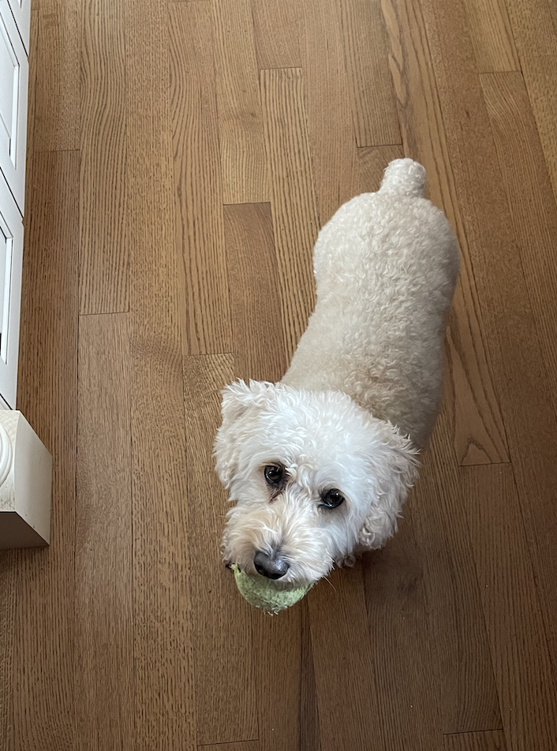
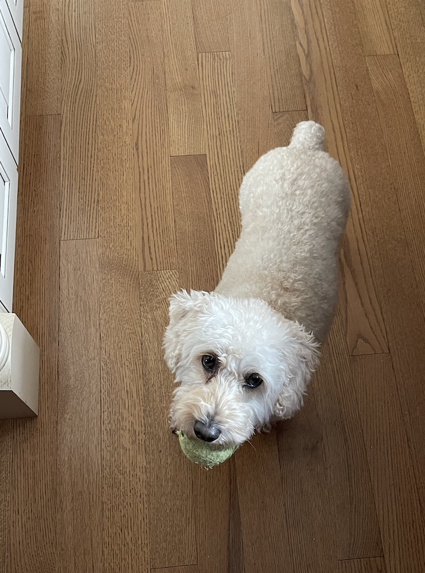

Pets of the World
Milo

Milo is a 6 year old schnoodle. He is super energetic and his favorite game is fetch, which he wants to play all the time — yes, even when it’s pitch black outside or the weather is unideal. Milo is also loving and kind, at least to humans. When he’s around other dogs, he is either jealous of the attention they’re receiving, or ignores them because he has other priorities (chasing a ball).
Milo is also a pretty smart dog, although he doesn't always use it for good. He can roll over on command, and use his sense of scent to find a hidden treat. But he’s also figured out some loopholes to get what he wants. For example, he has been trained to nudge the bell near the front door to indicate that he needs to be walked. Recently, though, he’s learned that he can just pretend like he wants to go on a walk, but instead lead us around the house to the backyard so he can play. In case it wasn’t clear: Milo loves to play. Although he can be sneaky, my family loves him more than anything.
Photo Gallery

 

Likes
- Playing fetch
- Table Scraps
- Belly rubs
Finn

Finn is a 7 year old grey cat. I feel like no one really knows cat breeds so I’m just gonna go with grey. He loves doing tricks for treats and his favorite is giving high fives to people. He might as well be a dog as he loves the outdoors and meeting new people. I can only describe him as goofy and chaotic.
Finn’s biggest enemy is his vet. I don't know whether or not it’s because his vet is an MSU alum, but he doesn’t like him. He actually has to be prescribed a sedative before he goes to the vet office because he’ll suddenly act like he was never a house cat for 7 years.
Photo Gallery


Likes
- Belly rubs
- Head Rubs
- Sleeping in cardboard boxes
Zack

Zack is an African grey parrot, aged around three years old. Zack loves flying and being outside of the cage at all times. He’s very nice but bites so much.
Zack’s favorite foods are unsalted sunflower seeds and mangos. He loves being able to sit on people’s shoulder and talking to them. Zack knows over 500 words and learns more everyday.
Photo Gallery


Likes
- Sunflower Seeds
- Flying
- Going on Walks
Terry

Terry is a playful and spirited dachshund that loves to play fetch with his bone or tennis ball. He loves wandering in forests and finding large sticks to take home. His favorite foods are kibble and peanut butter. Terry will run around frantically when it’s time to eat at home.
My family found Terry at a shelter and decided to adopt it. He was 4 months old and is now 8 years old. Terry knows how to swim, but we don’t tend to go often. Terry got poison ivy once; however, he quickly recovered and has been doing great since.
Photo Gallery


Likes
- Fetch
- Eating
- Belly rubs
Jingle

Jingle loves going outside. He used to be an outdoor/indoor cat until we realized that he loved to get injured. Now, we take him on walks with a leash which he loves! Every time he sees me carrying the leash he goes crazy and meows to go out.
Jingle is very mischievous, he has gotten into many different accidents. His first accident was outside; a bee stung his paw and he cried all night long. The second one was ALSO outside, he got stuck on a tree for four days. Finally, he came back home one day with his tail bleeding and ripped out.
Photo Gallery


Likes
- Going on walks
- Being pet
- Eating Treats